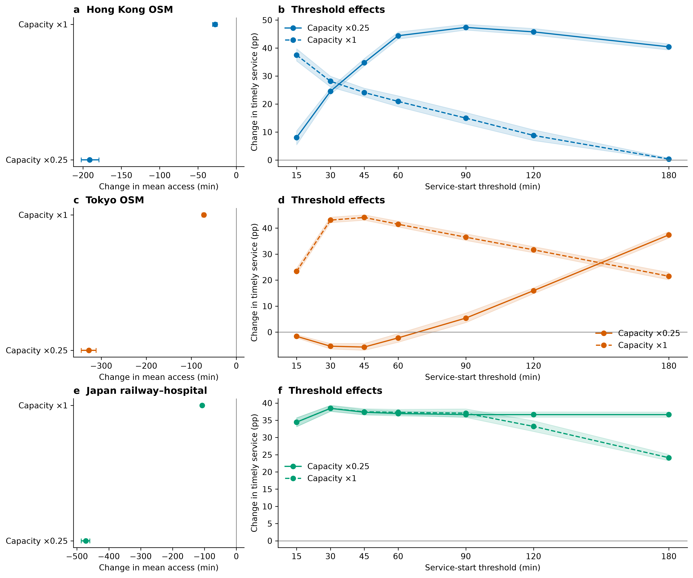
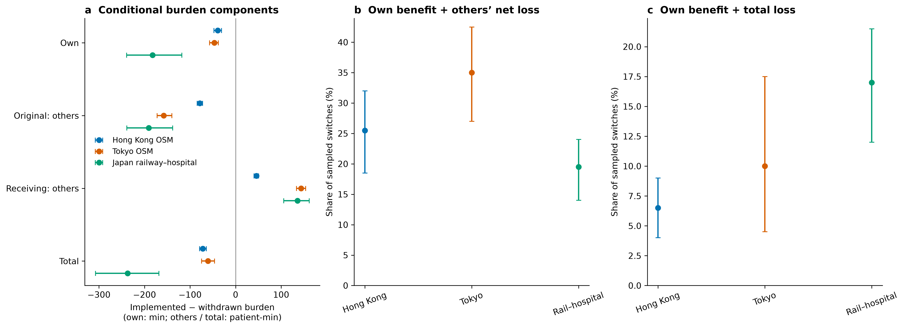
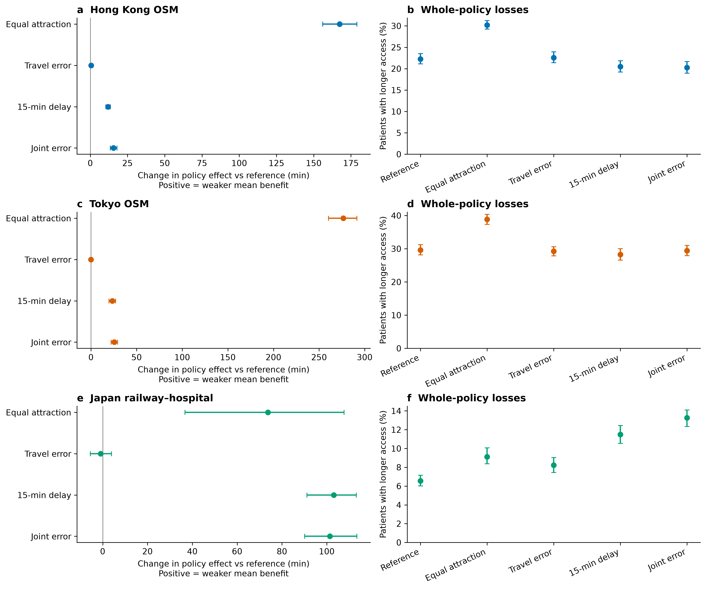

PROJECT 2
Capacity-Aware Destination Recommendations
Average delay, timely medical access and queue spillovers
A simulation study of how capacity-aware destination recommendations affect patients and shared healthcare queues.
Team member: Bingyu Cao, Rong Feng
GitHub: cyM-MC/nhb
If you are interested in this research, please contact us at changyima@jlu.edu.cn.
01The “price of anarchy” in healthcare
Patients choose facilities based on proximity or perceived queues, but their arrivals change waiting times for others. A recommendation that benefits one patient can shift congestion to another facility.
Individual choices
Patients respond to travel times and perceived waiting times.
Shared capacity
Each arrival affects the queue encountered by subsequent patients.
Queue spillovers
Personal gains can transfer delay burdens between facilities.
Evaluation question
Do lower average delays also improve timely access and the distribution of queue burdens?
02Simulation framework
The study combines transportation networks with hospital activity data to compare destination policies under shared patient and disruption scenarios.
Transportation inputs
OpenStreetMap road networks and private railway data.
Medical inputs
Official registry data and DPC hospital activity.
Shared scenarios
500 synthetic patients under spatial disruption, with consistent travel and service rules across policy comparisons.
Destination policies
Baseline choices, fastest-travel recommendations and capacity-aware recommendations.

03Input data checks
Input checks compare transport-time calibration and hospital activity prediction with simpler alternatives. These checks validate selected inputs, rather than observed recommendation effects.
Transportation error
The calibrated network has a mean absolute error (MAE) of 8.10 minutes, compared with 24.08 minutes for the assumed-speed model.
Hospital activity error
Previous-year activity has an MAE of 7.33 admissions, compared with 30.66 admissions for the bed-proportional model.

04Average delay and timely access
Policy effects vary across Hong Kong OSM, Tokyo OSM and the Japan railway–hospital scenarios. Under constrained capacity, a lower average delay does not always mean more patients receive timely service.
Hong Kong OSM
At 0.25× capacity, mean delay falls from 220.20 to 28.81 minutes. Timely service improves at all reported thresholds from 15 to 180 minutes.
Tokyo OSM
Mean access time falls by 327.45 minutes, while timely service at short thresholds of 15–60 minutes decreases by 1.62–5.74 percentage points. Gains at 90, 120 and 180 minutes are 5.40, 15.94 and 37.40 percentage points, respectively.
Japan railway–hospital
In the high-stress scenario, mean delay falls by 472.39 minutes and timely service improves at every reported threshold.
Capacity dependence
Benefits shrink at normal capacity. For example, the Tokyo mean reduction falls to 72.07 minutes at 1× capacity.

05Single-switch withdrawals and queue spillovers
Single-switch withdrawal analyses examine how an accepted destination change affects the patient and the queues at the original and receiving facilities.
Own benefit
The presentation reports an average personal time saving of 46.64 minutes.
Original facility
The reported delay burden removed is 157.87 patient-minutes.
Receiving facility
The reported delay burden added is 143.91 patient-minutes.
Individual and collective outcomes
In the reported example, 35.0% of switches benefit the patient while increasing the collective net burden.

Single-switch results are conditional marginal effects, not additive whole-policy effects. Values above are those highlighted in the presentation.
06Information and preference sensitivity
The size of the policy benefit depends on how patient preferences and information quality are represented.
Attractiveness assumptions
The reference mean reduction of 327.45 minutes falls to 50.88 minutes when facility attractiveness is equalized.
Imperfect information
The joint-error scenario weakens the mean benefit by 25.54 minutes in the reported comparison.

07Queue structure
The service architecture changes both the magnitude of average improvements and the share of individuals who experience worse outcomes.
Single server
A mean improvement of 141.13 minutes and an individual loss share of 12.80%.
Parallel servers
A mean improvement of 116.00 minutes and an individual loss share of 7.12%.

08Simulation constraints and implications
These findings come from simulations using historical inputs, rather than live clinical trials.
Assumed patient choices
Patient preferences and responses to disruption have not been empirically verified in this framework.
Deterministic service
The simulations assume initially empty queues and fixed processing durations.
Historical inputs
The framework combines datasets from different periods.
Joint evaluation
Assess interventions using average delay, timely service and the distribution of queue burdens together.